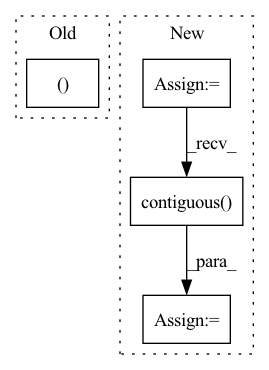

Pattern ID :785
Before Change
alignments = torch.stack(alignments).transpose(0, 1)
outputs = torch.stack(outputs).transpose(0, 1).contiguous()
return outputs, alignments
def is_end_of_frames(output, eps=0.2): /ǖ.2
return (output.data <= eps).all()After Change
outputs = []
alignments = []
stop_outputs = []
t = 0
memory_input = initial_memory
while True:
if t > 0:
if greedy:
memory_input = outputs[-1]
else:
// combine prev. model output and prev. real target
// memory_input = torch.div(outputs[-1] + memory[t-1], 2.0)
// add a random noise
// noise = torch.autograd.Variable(
// memory_input.data.new(memory_input.size()).normal_(0.0, 0.5))
// memory_input = memory_input + noise
memory_input = memory[t-1]
// Prenet
processed_memory = self.prenet(memory_input)
// Attention RNN
attention_rnn_hidden, current_context_vec, alignment = self.attention_rnn(
processed_memory, current_context_vec, attention_rnn_hidden,
inputs)
// Concat RNN output and attention context vector
decoder_input = self.project_to_decoder_in(
torch.cat((attention_rnn_hidden, current_context_vec), -1))
// Pass through the decoder RNNs
for idx in range(len(self.decoder_rnns)):
decoder_rnn_hiddens[idx] = self.decoder_rnns[idx](
decoder_input, decoder_rnn_hiddens[idx])
// Residual connectinon
decoder_input = decoder_rnn_hiddens[idx] + decoder_input
output = decoder_input
stop_token_input = decoder_input
// stop token prediction
stop_token_input = torch.cat((output, current_context_vec), -1)
stop_output = self.stop_token(stop_token_input)
// predict mel vectors from decoder vectors
output = self.proj_to_mel(output)
outputs += [output]
alignments += [alignment]
stop_outputs += [stop_output]
t += 1
if (not greedy and self.training) or (greedy and memory is not None):
if t >= T_decoder:
break
else:
if t > 1 and is_end_of_frames(output, self.eps):
break
elif t > self.max_decoder_steps:
print(" !! Decoder stopped with "max_decoder_steps". \
Something is probably wrong.")
break
assert greedy or len(outputs) == T_decoder
// Back to batch first
alignments = torch.stack(alignments).transpose(0, 1)
outputs = torch.stack(outputs).transpose(0, 1).contiguous()
stop_outputs = torch.stack(stop_outputs).transpose(0, 1).contiguous()
return outputs, alignments, stop_outputs
In pattern: SUPERPATTERN
Frequency: 4
Non-data size: 4
Instances Fragment ID: 2863883
Project Name: coqui-ai/tts
Commit Name: 5750090fcd4a6718608c7357e3890f5b2a545ae0
Time: 2018-03-22
Author: egolge@mozilla.com
File Name: layers/tacotron.py
M Class Name: Decoder
N Class Name: Decoder
M Method Name: forward(3)
N Method Name: forward(3)
M Parent Class: nn.Module
N Parent Class: nn.Module
M File Name: layers/tacotron.py
N File Name: layers/tacotron.py
M Start Line: 255
M End Line: 347
N Start Line: 259
N End Line: 359
Before Change
v = self.NIN_2(h)
w = torch.einsum("bchw,bcij->bhwij", q, k) * (int(C) ** (-0.5))
w = torch.reshape(w, (B, H, W, H * W ))
w = F.softmax(w, dim=-1)
w = torch.reshape(w, (B, H, W, H, W))
h = torch.einsum("bhwij,bcij->bchw", w, v)After Change
).contiguous() / math.sqrt(channel)
attn = attn.view(batch, n_head, height, width, -1)
attn = torch.softmax(attn, -1)
attn = attn.view(batch, n_head, height, width, height, width)
out = torch.einsum("bnhwyx, bncyx -> bnchw", attn, value).contiguous()
out = self.out(out.view(batch, channel, height, width))
return out + input
Fragment ID: 2863882
Project Name: janspiry/image-super-resolution-via-iterative-refinement
Commit Name: 1a5a8bc409a8b8e072eb2bf25330d4662fd279c4
Time: 2021-08-09
Author: lw_jiang@foxmail.com
File Name: model/ddpm_modules/unet.py
M Class Name: AttnBlock
N Class Name: SelfAttention
M Method Name: forward(2)
N Method Name: forward(2)
M Parent Class: nn.Module
N Parent Class: nn.Module
M File Name: model/ddpm_modules/unet.py
N File Name: model/ddpm_modules/unet.py
M Start Line: 125
M End Line: 136
N Start Line: 111
N End Line: 128
Before Change
Returns:
Tensor: batch x height x width
if isinstance(factor, (int, float )):
out = image * (self.c_table * factor)
else:
b = factor.size(0)After Change
super(_DeBlockSplitting, self).__init__()
def forward(self, x: torch.Tensor, height: int, width: int) -> torch.Tensor:
k = 8
batch_size = x.shape[0]
x_reshaped = x.view(batch_size, height // k, width // k, k, k)
x_transposed = x_reshaped.permute(0, 1, 3, 2, 4)
out = x_transposed.contiguous() .view(batch_size, height, width)
return out
Fragment ID: 2863864
Project Name: lornatang/real_esrgan-pytorch
Commit Name: edfbb6820fc2084c2ffe132e9b64a348a323d1e7
Time: 2022-06-16
Author: liuchangyu1111@gmail.com
File Name: imgproc.py
M Class Name: CDequantize
N Class Name: _DeBlockSplitting
M Method Name: forward(4)
N Method Name: forward(3)
M Parent Class: nn.Module
N Parent Class: nn.Module
M File Name: imgproc.py
N File Name: imgproc.py
M Start Line: 1698
M End Line: 1711
N Start Line: 1374
N End Line: 1379
Before Change
self.initialize()
def forward(self, inputs, targets):
enc_output, i_mask = None, None
if self.has_inputs:
i_mask = utils.create_pad_mask(inputs, self.src_pad_idx)
enc_output = self.encode(inputs, i_mask)
After Change
def forward(self, padded_input, input_lengths, padded_target):
if self.feat_extractor == "emb_cnn" or self.feat_extractor == "vgg_cnn":
padded_input = self.conv(padded_input)
// Reshaping features
sizes = padded_input.size() // B x H_1 (channel?) x H_2 x T
padded_input = padded_input.view(sizes[0], sizes[1] * sizes[2], sizes[3])
padded_input = padded_input.transpose(1, 2).contiguous() // BxTxH
encoder_padded_outputs, _ = self.encoder(padded_input, input_lengths)
pred, gold, *_ = self.decoder(padded_target, encoder_padded_outputs, input_lengths) Fragment ID: 2863871
Project Name: qute012/kosr
Commit Name: b7d24b0d835254fd425224eba3421a3b7224e55f
Time: 2021-01-12
Author: ejrwls012@gmail.com
File Name: model/transformer/transformer.py
M Class Name: Transformer
N Class Name: Transformer
M Method Name: forward(4)
N Method Name: forward(3)
M Parent Class: nn.Module
N Parent Class: nn.Module
M File Name: model/transformer/transformer.py
N File Name: model/transformer/transformer.py
M Start Line: 19
M End Line: 28
N Start Line: 18
N End Line: 34